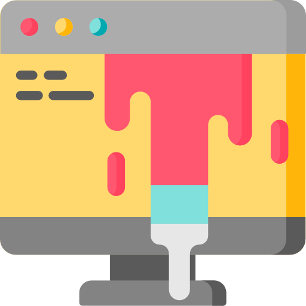

I'm Maria
I market & code stuff.
Hello there.
I'm experienced in Email & Social Media Marketing and a novice in Web Design/Development.
I have a passion for creativity, functionality, and talking to strangers.
Here's what I can do:
Email & Social Media Marketing Specialist
 I specialize in Email and Social Media Marketing. I am proven effective in using different types of software for lead generation and cold email outreach, and also very resourceful in looking for the right type of leads, using mostly Instagram with my current role as a Growth Marketing Support profesional for a B2B SaaS company. I also regularly engage with our Instagram audience using our official account and generate hashtags that could help the account organically grow it's audience. I like keeping myself up to date with the latest trends with different software and with small business communities as well.
I specialize in Email and Social Media Marketing. I am proven effective in using different types of software for lead generation and cold email outreach, and also very resourceful in looking for the right type of leads, using mostly Instagram with my current role as a Growth Marketing Support profesional for a B2B SaaS company. I also regularly engage with our Instagram audience using our official account and generate hashtags that could help the account organically grow it's audience. I like keeping myself up to date with the latest trends with different software and with small business communities as well.
Web Design/Development.
I am a noob web designiner/developer and am familiar HTML, CSS and Bootstrap, Wireframing, Media Query and WordPress development. Creativity and Functionality are my greatest passions ever since I was young, and I express both of these through painting, sketching, and chalkart designs. I have taken online classes on web design/development and have posted a sample website through github. You may check it out here: Tindog Project
Voice Acting & Hosting and other stuff...

I have worked for a Japanese Company that hires Filipino tutors to teach English to Japanese students online for more than a year. As a voice artist, I have recorded English articles, which students upload to use as reference to proper English pronunciation, articulation, intonation, etc. I have recorded with corporate videos as well in the past. In addition to that, I have hosted several Christmas and New Year parties in the past 4 years because of my interpersonal communication skills and my being engaging toward others.
GET IN TOUCH!
Feel free to check out my resume.
Maria's Resumé© 2019 Maria Umali.